The control of high-dimensional systems, such as soft robots, requires models that faithfully capture complex dynamics while remaining computationally tractable. This work presents a framework that integrates Graph Neural Network (GNN)-based dynamics models with structure-exploiting Model Predictive Control to enable real-time control of high-dimensional systems.
By representing the system as a graph with localized interactions, the GNN preserves sparsity, while a tailored condensing algorithm eliminates state variables from the control problem, ensuring efficient computation. The complexity of our condensing algorithm scales linearly with the number of system nodes, and leverages GPU parallelization to achieve real-time performance.
The proposed approach is validated in simulation and experimentally on a physical soft robotic trunk. Results show that our method scales to systems with up to 1,000 nodes at 100 Hz in closed-loop, and demonstrates real-time reference tracking on hardware with sub-centimeter accuracy, outperforming baselines by 63.6%. Finally, we show the capability of our framework to achieve effective full-body obstacle avoidance.
The GNN is trained in PyTorch Geometric and translated to Flax for JIT compilation. The condensing algorithm is implemented in JAX, leveraging vectorized mapping and GPU execution via XLA. The resulting QP is solved using the interior-point solver HPIPM within a Sequential Quadratic Programming (SQP) real-time iteration scheme.
The simulation models a tendon-driven trunk robot in MuJoCo. Hardware experiments use the corresponding physical platform, tracked via an OptiTrack motion capture system at 100 Hz and actuated by 6 XM540 Dynamixel motors.
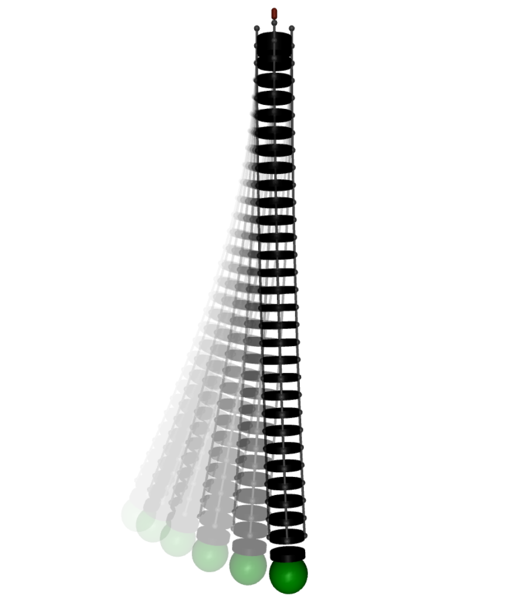
Simulated trunk robot
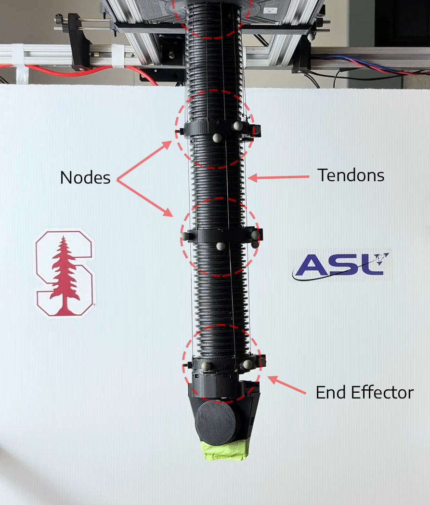
Physical trunk robot
We evaluate scalability by varying the number of segments in the simulated trunk from 1 to 1,000. The MPC problem is solved over a horizon of N=20 with constraints on the end effector and control inputs. GNN-MPC exhibits sub-linear scaling with respect to the number of segments, enabling real-time control at 100 Hz. The condensing step captures most of the computational burden and is effectively parallelized on the GPU.
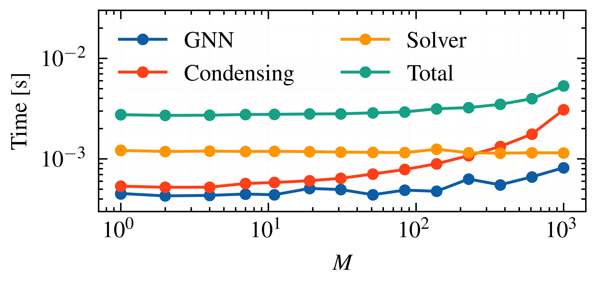
Scalability of GNN-MPC with respect to the number of subsystems. Computation times are shown in log-log scale.
We validate GNN-MPC on a physical soft trunk robot for trajectory tracking of a figure-eight and a circle. The MPC runs at 100 Hz with a prediction horizon of N=20. The robot is represented by 4 nodes measured via motion capture, each with 6 states (position and velocity in 3D).
GNN-MPC achieves average tracking errors of 6.25 mm (figure-eight) and 3.67 mm (circle), outperforming all baselines by at least 63.6%. The GNN captures hardware-specific effects such as input nonlinearities and tendon slackness, which the baselines fail to model effectively.
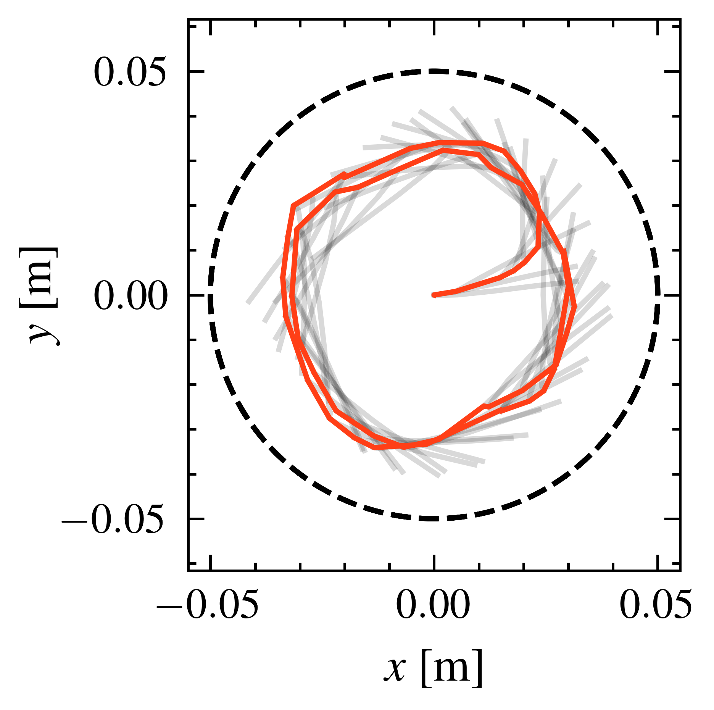
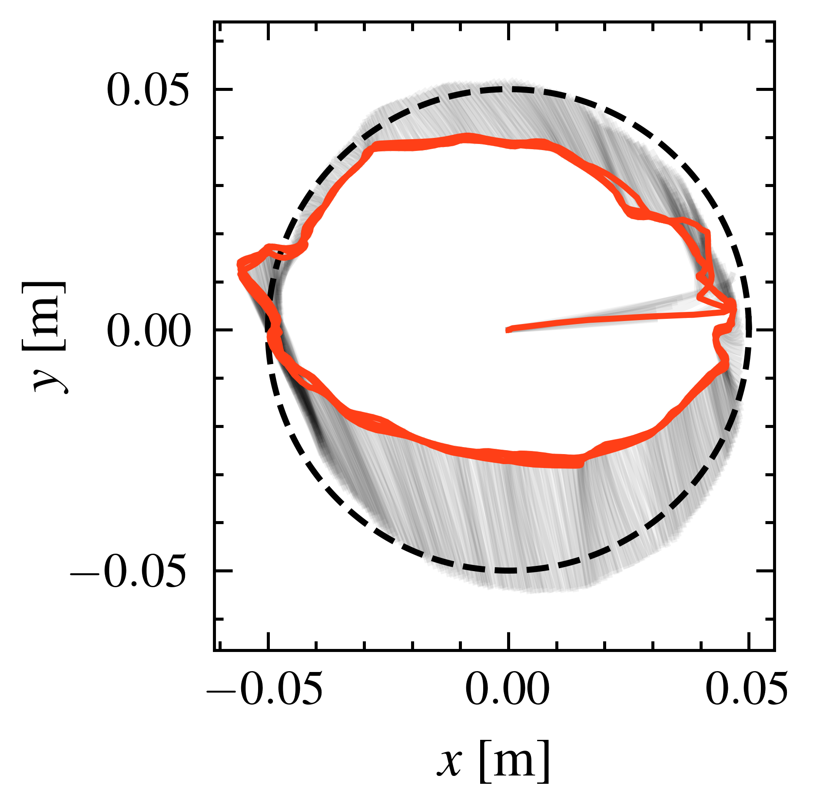
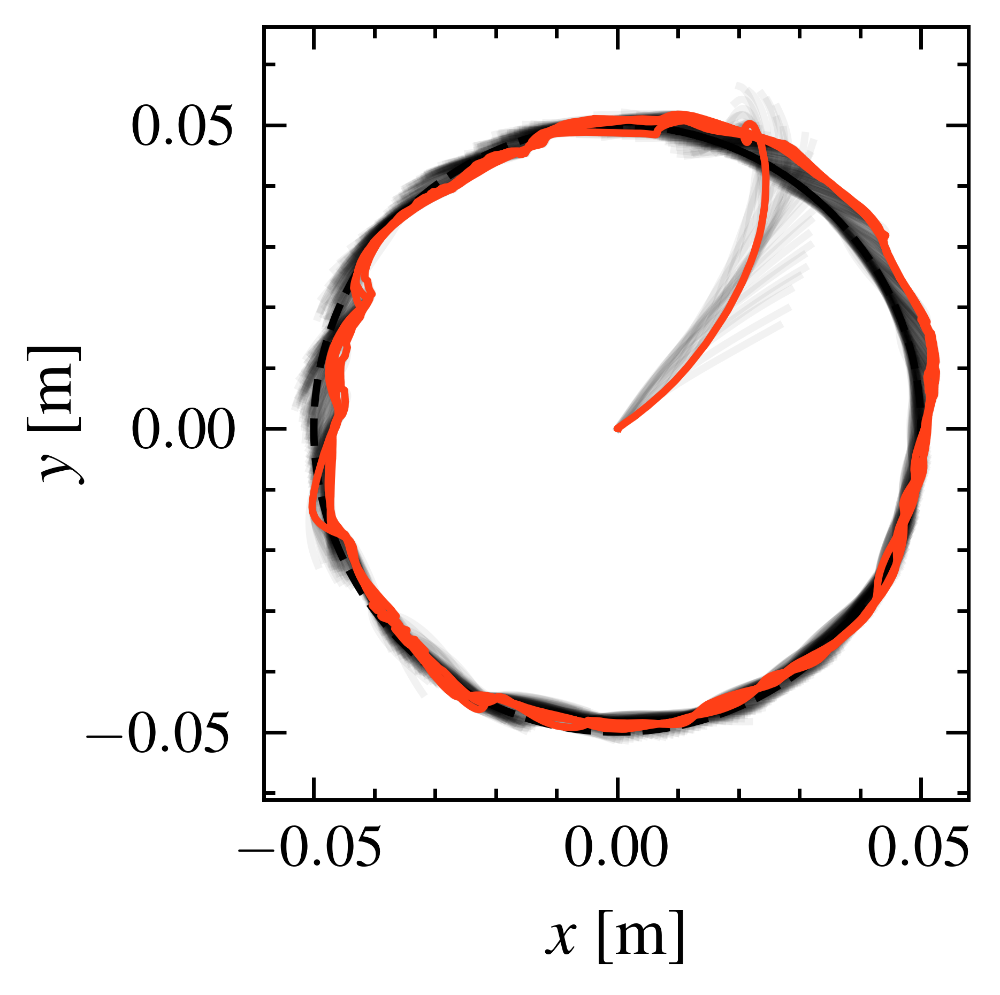
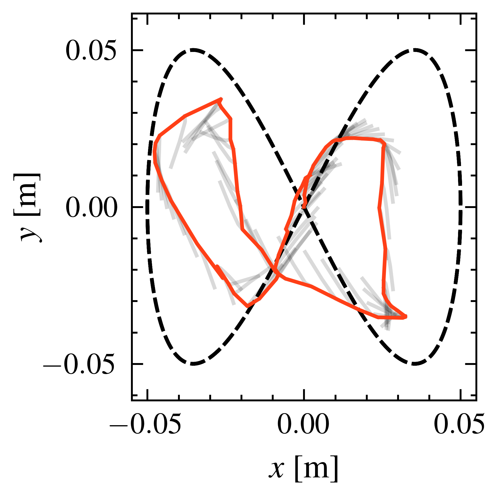
(a) Koopman
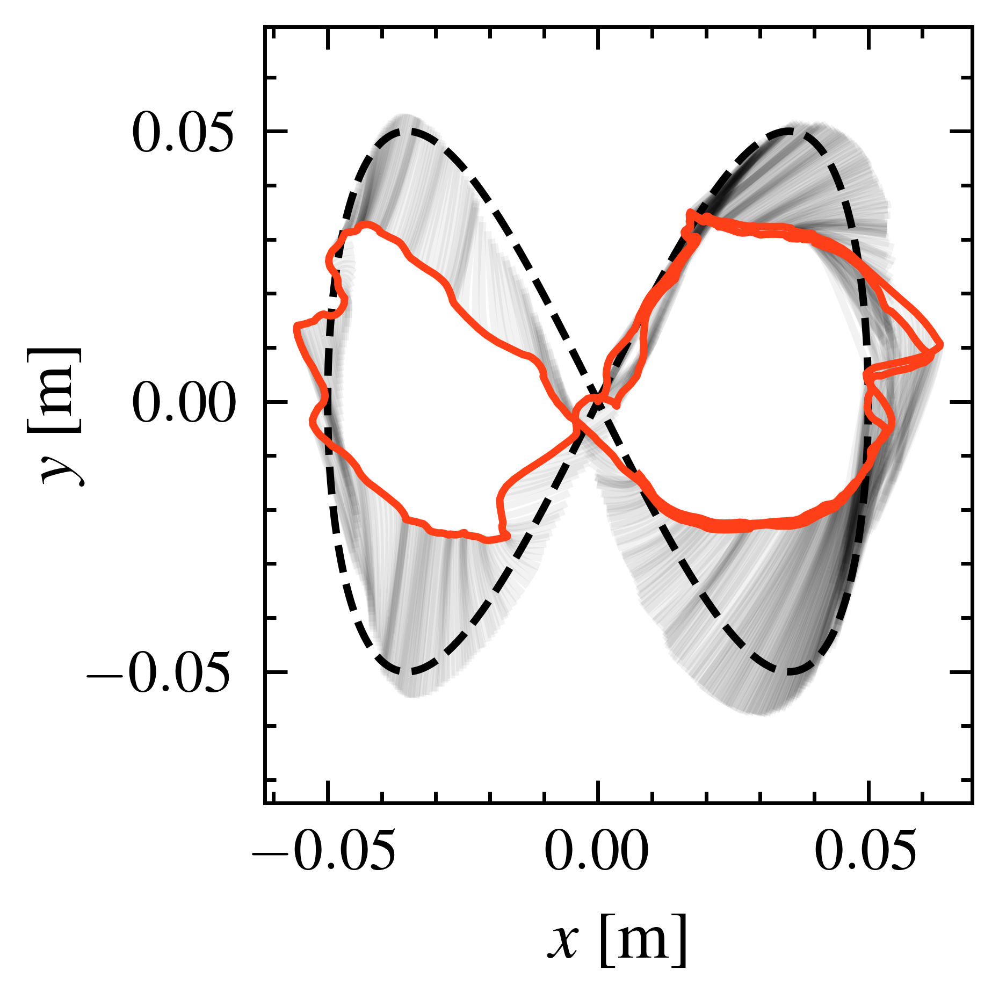
(b) SSM-Orth
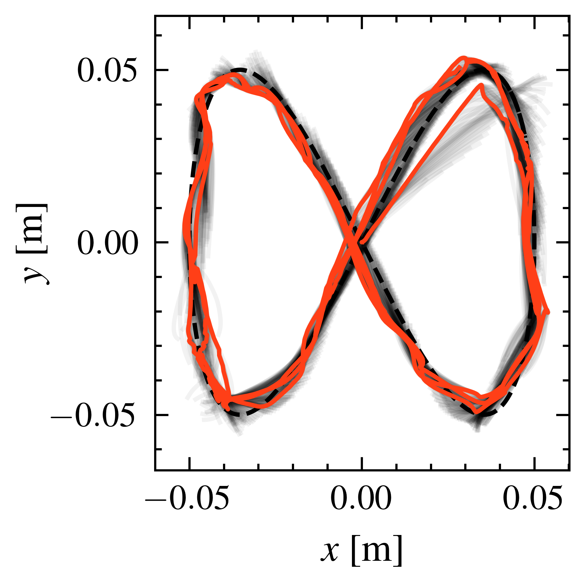
(c) GNN (Ours)
Reference tracking of a circle (top) and figure-eight (bottom). The reference is shown in dashed black, closed-loop trajectories in red, and MPC plans at each time step in grey.
We demonstrate the benefit of full-node control by enabling collision avoidance across the entire soft robot through individual barrier terms for each of the four measured nodes. GNN-MPC successfully avoids collisions while keeping other nodes close to their resting position, demonstrating the capability to handle complex interactions with the environment.
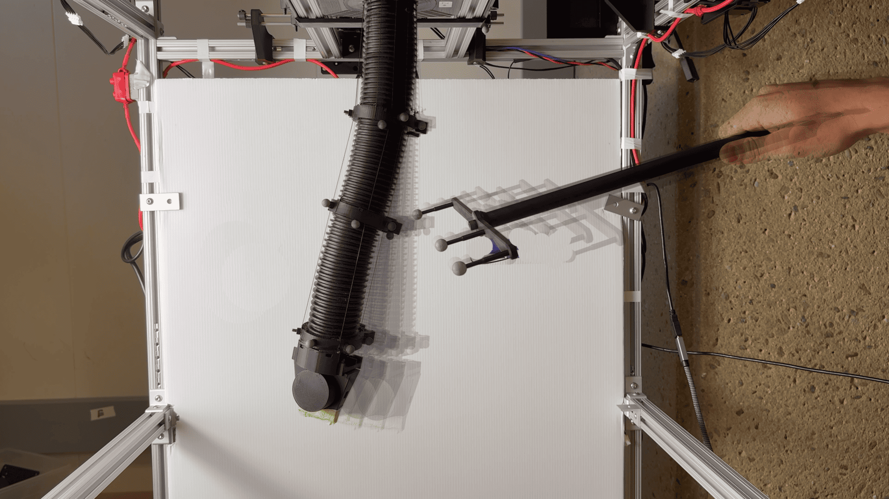
Deflection as the obstacle approaches the middle node.
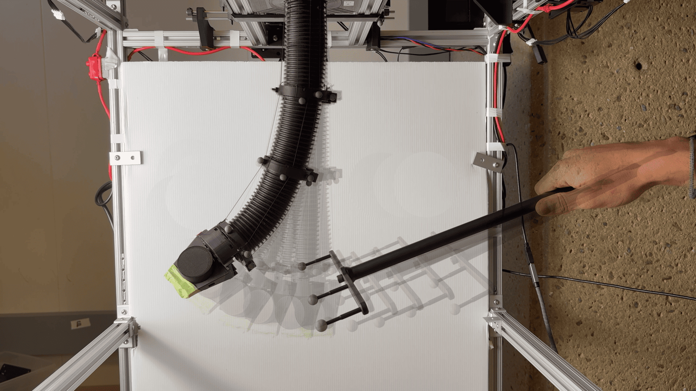
Deflection as the obstacle approaches the end effector.
@inproceedings{benito2025gnnmpc,
author = {Benito Eberhard, Patrick and Pabon, Luis and Gammelli, Daniele and Buurmeijer, Hugo and Lahr, Amon and Leone, Mark and Carron, Andrea and Pavone, Marco},
title = {Graph Neural Model Predictive Control for High-Dimensional Systems},
booktitle = {IEEE International Conference on Robotics and Automation (ICRA)},
year = {2026}
}